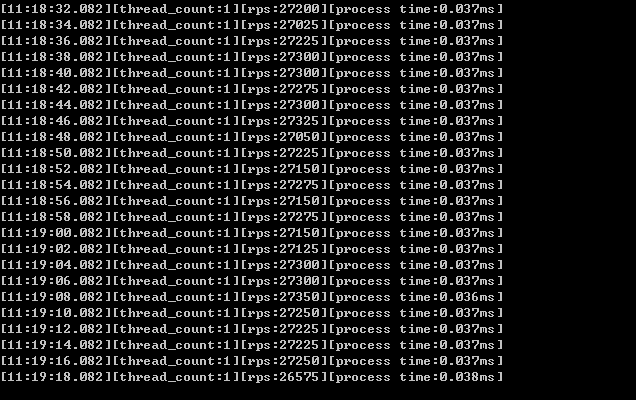
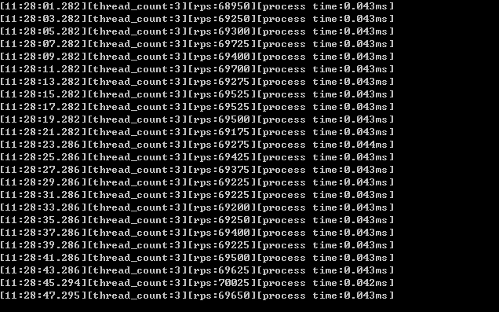
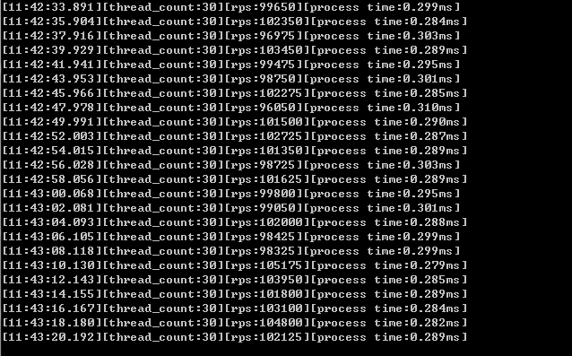

前言
经过一段时间的优化，Socean.RPC的性能又提高了一些，不过这差不多是socketAPM模型的极限了。本框架仅仅2000多行代码，无第三方框架引用，在双核PC上测试大约并发量13w、响应时间0.04ms，基本上实现了本框架的最初设计目的----用少量的代码实现一个高性能、高稳定性、高响应速度的RPC框架，不过跟其他RPC框架相比还少了动态代理这一块，先用常规序列化吧，以后应该会加上。
本次测试是在笔记本上运行的，CPU是i5 6200U（双核），测试客户端和测试服务端都是在一台笔记本上，所以并发量肯定比只跑测试服务端低些，测试代码都在github上，有兴趣的同学可以自己下载测试
开始测试
首先是单线程测试，图中可以看到，平均处理量大约2.7W条每秒，响应时间大约0.037ms每条

接着是3个线程测试，平均处理量大约7W条每秒，响应时间大约0.043ms每条（这里之所以测试3线程，主要是因为测试笔记本是双核四线程，还有一个线程是空闲状态，这里模拟的是高负载运行状态，响应速度还是很快的）

最后是30个线程压测，此时基本是满负载测试了，平均处理量大约10W条每秒，响应时间大约0.29ms每条，此时server的CPU使用率大约是30%,client的CPU使用率大约是45%，机器整体的CPU使用率在90%以上，如果测试笔记本只运行server的话，理论上13w条每秒应该是不成问题的

本次测试使用的是双核笔记本进行的，所以并发只能到13w，如果运行在20核（最新的应该是48核了吧）的服务器上，并发到40w每秒是没问题的
项目地址
https://github.com/ch00486259/Socean.Rpc
其他
使用本RPC框架做其他组件能节省很多时间
1.服务网关，rpcserver的messageprocessor支持异步，可以做到每秒10W+的rpc请求透传，路由信息可存于消息的HeaderExtention中，HeaderExtention专为Gateway定制
2.缓存，经过简单的封装即可实现一个简易缓存，配合一致性hash可实现简易分布式功能
3.分布式计算、大数据，由于本框架的高速响应的特点,可用于分布式计算、大数据等高响应速度的场景